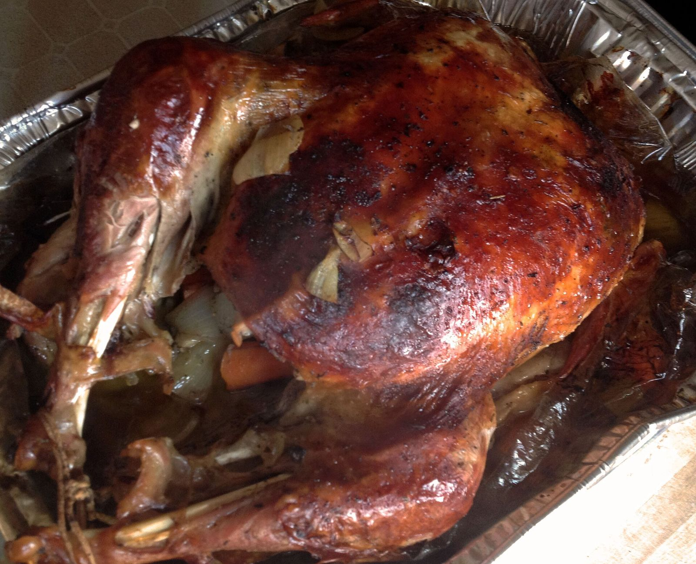
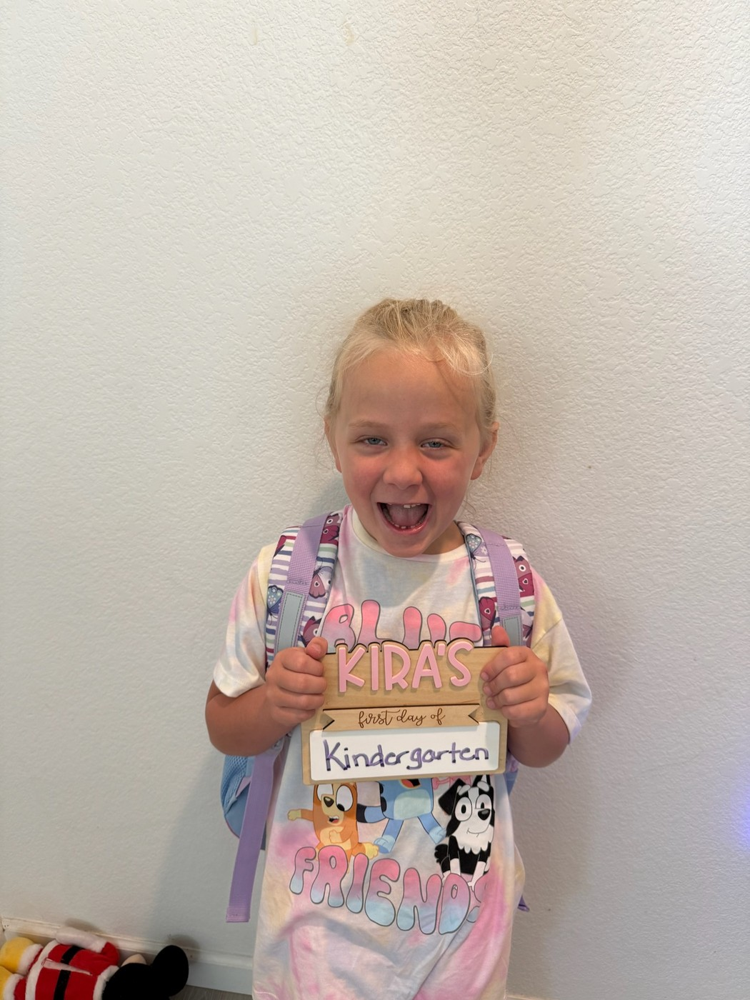
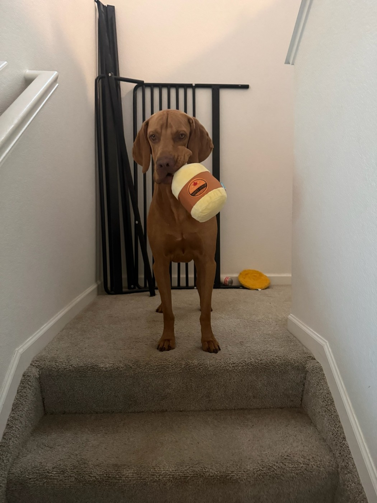
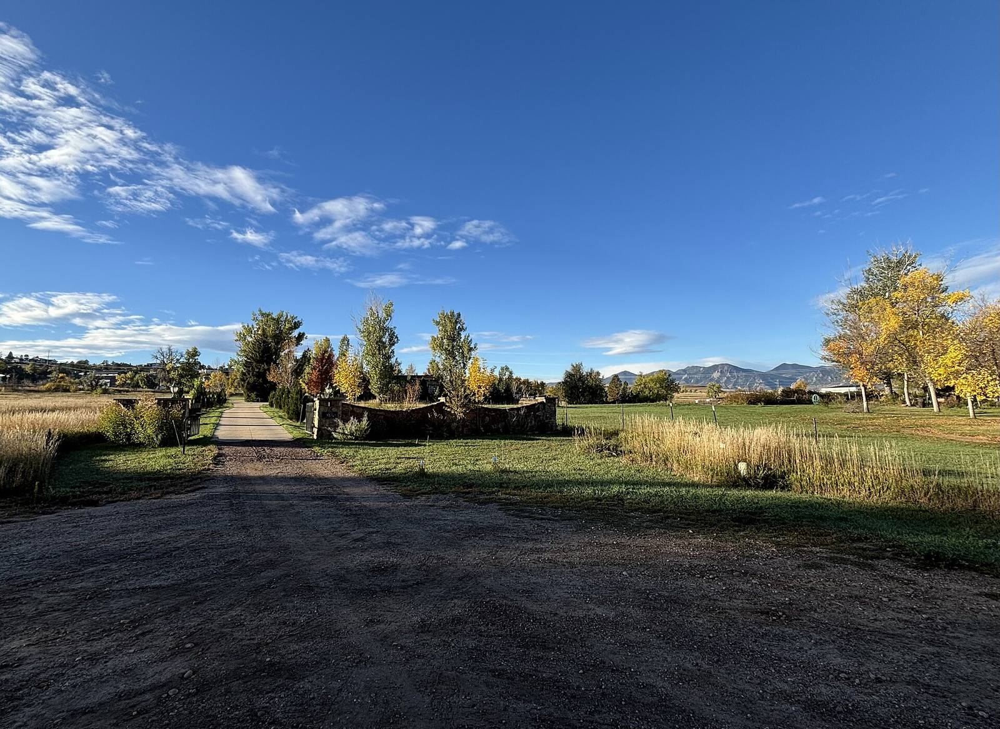

Maximize time with Preston, see family, and get home Saturday.
This is a starting plan with options, not a locked itinerary
6 daysMon Nov 23 – Sat Nov 28
ThanksgivingThursday, November 26
2 flightsSouthwest · confirmation 2GP57I
3 nightsResidence Inn Longmont, Wed–Sat
The idea
Overview
Christoph flies into DEN at noon on Monday. Sandy (Jenn’s mom) picks him up and he keeps her car for the week. The working assumption is that he stays with her in Northglenn Monday night, but that isn’t confirmed. Tuesday morning he gets her to Union Station for the Grand Junction train, then meets Aunt Linda in Parker for breakfast or lunch, with Preston time afterward in nearby Highlands Ranch. Wednesday he meets John at Gem Industries in Welby, then they have breakfast nearby, then he parks Sandy’s car at Lynn’s in Westminster and drives with her to pick up Preston and Dexter in Highlands Ranch, arriving at the Longmont Residence Inn at 3:00 PM. Thursday is Thanksgiving with his parents and with Ivan’s family in Mead, right by Longmont. Friday is open time with Preston. Saturday they come back down, then Christoph flies SJC at 11:00 AM MT.
Times below are Mountain Time unless a flight’s Pacific Time is also noted. Drive times are estimates without traffic and can change. Private addresses are left off this page.
Monday to Saturday
Day by day
Booked items are marked. Everything else is a draft to confirm.
Monday, November 23
Arrive DEN · Sandy picks up
8:30 AM PT
Southwest WN 3875 leaves San Jose (SJC). Seat 17B, Choice fare. Booked
12:00 PM MT
Lands at DEN. Sandy picks Christoph up. He keeps her car for the week. The drive to Northglenn is about 35 minutes without traffic.
Afternoon / evening
Open — a first block with Preston in Highlands Ranch is about 45 minutes from Northglenn. Monday night lodging is assumed to be Sandy’s in Northglenn, still to confirm.
Tuesday, November 24
Sandy to the train · Linda in Parker · Preston
The train
Amtrak’s California Zephyr (train 5) is scheduled to leave Denver Union Station at 8:46 AM MT for Grand Junction, arriving 4:30 PM MT. (The published time is 8:46, not 8:05.) Check it the day before.
Suggested drop
From Northglenn, RTD’s N Line is the natural rail option. Both nearby stations are a short hop: Eastlake/124th is about 4 minutes from Sandy’s, and Northglenn/112th is about 5 minutes. They are the same train, three minutes apart.
7:00 AM
Leave Northglenn. Aim for the 7:13 AM MT N Line at Eastlake/124th, or the same train at 7:16 AM at Northglenn/112th. It is scheduled to arrive at Union Station at 7:42 AM, about an hour before the Zephyr. A tighter backup is the 7:43/7:46 train, arriving 8:12 AM. Do not take the 8:13/8:16 train — it arrives at 8:42 AM, too late.
Or drive her
Driving Sandy all the way to Union Station is about 22 minutes without traffic, or closer to 30–40 minutes in a Tuesday morning rush. Leave by about 7:15–7:20 AM to be there around 8:00. This is simpler if she has bags; the N Line is more predictable in traffic.
Breakfast or lunch
Aunt Linda in the Parker area — they’ll probably meet at a restaurant, not at her house. After a 7:16 drop, Parker is about 50–55 minutes from Northglenn, so breakfast is the natural fit (arriving around 8:30–9:00). After a drive to Union Station, Parker is about 35 minutes from downtown. Three options are below. Nothing is booked.
Afternoon / evening
Preston time in Highlands Ranch, about 25 minutes from Parker.
The Perfect Time Cafe
Well-rated American breakfast and lunch in Parker. Open Tuesday 7:00 AM–9:00 PM, so it works for either meal.
John at the shop, breakfast nearby, then up to Longmont
Meet
John Nelson at Gem Industries, his shop in Welby. Time still TBD. He lives in Brighton; the meet is at the shop. From Northglenn, Welby is about 20 minutes without traffic.
Breakfast
Nearby in Welby after meeting at the shop. Two options are below; nothing is booked.
Then
Drive to Westminster, about 25 minutes, and park Sandy’s car at Lynn’s. Switch into her car (Dexter can’t ride in Sandy’s car). This only works if Lynn is available.
Then
Pick up Preston and Dexter in Highlands Ranch, about 50 minutes from Westminster.
3:00 PM
Check in at the week’s Longmont destination: Residence Inn by Marriott Boulder Longmont. Highlands Ranch to the hotel is about 70 minutes without traffic (Christoph measured Highlands Ranch to Boulder at 59 minutes). 1-bedroom suite (queen and sofa bed), confirmation 71125352, through Saturday. Booked
Draft timing
After breakfast, the remaining drive is about 2 hours 25 minutes without traffic, plus time to swap cars and pick up Preston and Dexter. To be at the hotel at 3:00 PM, leave Highlands Ranch by about 1:30 PM, leave Westminster by about 12:15–12:30 PM, and leave the shop area in Welby by about 11:45 AM.
Backup A
Swap cars with Ivan. He and Tara are in Mead, next to Longmont, so a swap is easiest once the group is already up north — or Ivan could meet them.
Backup B
Preston and Dexter take transit. One Highlands Ranch → Boulder option Christoph checked: 402L bus from Ridgeline Blvd & Highlands Ranch Pkwy, RTD C Line, a walk, then the FF1 bus (for example 11:57 AM–2:13 PM MST, 2 hours 16 minutes). He’d rather spend the drive with Lynn if she’s free.
Evening
Settle in with Preston and Dexter. Ivan and Tara in Mead are about 25 minutes from the hotel.
Mr. Egg
A breakfast and lunch spot near the shop in Welby. Open Wednesday 6:00 AM–3:00 PM (closed Mondays).
Dexter can’t ride in Sandy’s car, so the Wednesday (and likely Saturday) transfer needs Lynn’s car, Ivan’s car, or transit.

Thursday, November 26
Thanksgiving
Family day
Day
Thanksgiving with Christoph’s parents, Richard and Lynn, and with Ivan, Tara, Erik, Kira, and Max. Time and place still TBD. Mead (Ivan and Tara) is about 25 minutes from the Longmont hotel; Westminster (Richard and Lynn) is about 35 minutes. Mead is the shorter hop from where the week is already based. Keep Preston in the day if the gathering allows.
Calendar
A recurring “FRD Checks” hold sits at 5:00–6:00 PM MT at the Highlands Ranch post office. That’s a conflict with a family evening — a candidate to skip this week.

Kira

Max

Friday, November 27
Open day with Preston
All day
Nothing else is on the calendar. Stay in Longmont and keep this as the fullest Preston day of the week. Mead is close if any of Ivan’s family is still around.
Saturday, November 28
Home, then DEN
Early morning
Bring Preston and Dexter back to Highlands Ranch, then Christoph continues to DEN. Official hotel checkout is 12:00 PM, but the flight is at 11:00 AM, so this has to start early. Longmont to Highlands Ranch is about 70 minutes, and Highlands Ranch to DEN is about 50 minutes, without traffic. Leave Longmont around 7:00 AM MT to be at the airport about 9:00–9:15.
Car
Same puzzle as Wednesday: Dexter still can’t ride in Sandy’s car. If Lynn (or Ivan, nearby in Mead) handles the return, Christoph can switch back to Sandy’s car for the airport run once Dexter is home. Confirm whether Saturday needs the same arrangement.
11:00 AM MT
Southwest WN 556 DEN → SJC, arrives 12:40 PM PT. Seat 18B, Basic fare. Confirmation 2GP57I. Booked
Saturday morning is tight: Longmont → Highlands Ranch → DEN, then an 11:00 AM MT departure.
Who this week is for
People
Preston
The priority. He lives in Highlands Ranch. Build the open blocks around him, especially Monday evening if the arrival allows, Tuesday afternoon after Parker, Friday, and the Longmont stay.
Dexter
Preston’s service dog. He’s going to Longmont with Preston Wednesday through Saturday. He can’t ride in Sandy’s car, which is why Wednesday and Saturday need another vehicle or transit.
Sandy
Jenn’s mom, in Northglenn. She picks Christoph up at DEN on Monday and leaves her car with him. Tuesday morning she takes the California Zephyr from Union Station to Grand Junction.
Aunt Linda
In Parker, near Highlands Ranch. Tuesday breakfast or lunch in the Parker area, probably at a restaurant rather than at her house. Time and which spot are still TBD.
John Nelson
Lives in Brighton. Wednesday: meet at his shop, Gem Industries, in Welby, then breakfast nearby. Time still TBD.
Richard and Lynn
Christoph’s dad and mom, in Westminster. Thanksgiving, and Wednesday’s preferred drive (park Sandy’s car at Lynn’s and ride with her). Whether she’s free Wednesday — and whether Saturday works the same way — is still open.
Ivan, Tara, and Erik
Ivan is Christoph’s brother; Tara is his wife; Erik is their son. They live in Mead, next to Longmont — about 25 minutes from the hotel. Thanksgiving is a short hop if it’s at their place, and Ivan is the backup for a car swap.
Kira
Ivan and Tara’s daughter, Christoph’s niece. Thanksgiving with the family in Mead.
Max
Ivan and Tara’s Vizsla. Thanksgiving with the family in Mead.
Southwest · confirmation 2GP57I
Flights
Both flights are booked for Christoph only, under confirmation 2GP57I.
Mon Nov 23 · WN 3875
SJC 8:30 AM PT → DEN 12:00 PM MT · seat 17B · Choice
Sat Nov 28 · WN 556
DEN 11:00 AM MT → SJC 12:40 PM PT · seat 18B · Basic
Check in starts 24 hours before each departure. The Saturday flight is Basic fare; seat 18B is already selected.
Cars, trains, hotel, drives
Logistics
Primary · Wednesday
Drive with Lynn
Christoph has Sandy’s car all week, but Dexter can’t ride in it. Park that car at Lynn’s in Westminster, ride with her, pick up Preston and Dexter in Highlands Ranch, and drive to Longmont. Preferred if she’s available.
Backup
Ivan car swap
Swap cars with Ivan so Dexter can ride. Ivan and Tara are in Mead, next to Longmont, so this is easiest once the group is already up north. May also be needed Saturday if Lynn isn’t making both trips.
Backup
Transit
Christoph checked Highlands Ranch → Boulder at 2 hours 16 minutes (402L, C Line, walk, FF1; e.g. 11:57 AM–2:13 PM MST). He’d rather use the time as a drive with Lynn.
Hotel
The week’s Longmont destination is the Residence Inn by Marriott Boulder Longmont. Check-in Wednesday, November 25 at 3:00 PM MT; checkout Saturday, November 28 at 12:00 PM MT. Confirmation 71125352. 1-bedroom, 2-room suite with a queen and a sofa bed. Total for the stay $490.78, prepaid and non-refundable.
Saturday’s official checkout is noon, but Christoph has to be at DEN for an 11:00 AM flight, so plan to leave the hotel early. Monday night is assumed to be Sandy’s in Northglenn; Tuesday night is still open.
Sandy’s train
The westbound California Zephyr (Amtrak 5) is scheduled to leave Denver Union Station at 8:46 AM MT on Tuesday and arrive in Grand Junction at 4:30 PM MT. Suggested rail drop: the 7:13 AM N Line at Eastlake/124th, or the same train at 7:16 AM at Northglenn/112th, arriving Union Station 7:42 AM. Leave Northglenn around 7:00 AM. Or drive her to Union Station, leaving about 7:15–7:20 AM. Confirm both the Amtrak and N Line times the day before.
These are uncongested driving estimates and can change with traffic. The Highlands Ranch → Longmont leg is a bit longer than Christoph’s 59-minute Highlands Ranch → Boulder measurement, as you’d expect.
To confirm
Open questions
Is Lynn available Wednesday? The preferred Longmont run is to park Sandy’s car at her place in Westminster and drive up with her. Does Saturday need the same arrangement, and does she stay in Longmont or only do the rides?
Where does Christoph sleep Monday and Tuesday nights? Monday at Sandy’s in Northglenn is the working assumption, not a confirmation. Tuesday night matters: starting Wednesday already in Westminster avoids an extra south-to-north trip before picking up Preston.
What time is the meet at John’s shop on Wednesday? Gem Industries in Welby, then breakfast nearby, then Westminster, Highlands Ranch, and the Longmont Residence Inn at 3:00 PM. Leaving the shop area by about 11:45 AM leaves a comfortable cushion.
Thanksgiving: Mead (Ivan and Tara, about 25 minutes from the hotel), Westminster (Richard and Lynn, about 35 minutes), or somewhere else? And should the 5:00 PM MT FRD Checks hold be skipped this week?
Linda in Parker: breakfast or lunch, and which spot — The Perfect Time Cafe, Stonegate Cafe, Doug’s Diner, or somewhere she prefers?